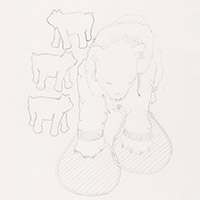
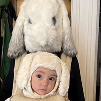

Qui est Mé
Mélisandre’s background is in visual arts. Her work consists of writing that oscillates between literature and media arts. Through her involvement with Lafin (the Liberal Arts Fictional Institute of Narrative: a fictional collective of artists and researchers), she has designed a series of poetic dream experiments, volunteered as an archivist, and written the novel Melancholy’s Satellites, which is currently in final revision. She has also recently begun searching for a publisher for her novel Sky Paint.